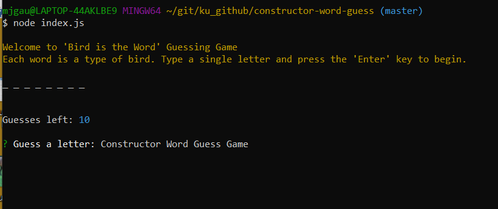

CONTENT
code
Jennifer Gaumnitz
I have an unusual blend of talents ... I am a science journalist and a coder. I can produce engaging content and develop web applications. I am a curious, hard-working, loyal, collaborative, and dependable team member. Most recently, I was a senior content specialist with dvm360.com. I served as managing editor of the journal Veterinary Medicine. I also produced/edited multiple books for the veterinary profession
I have a Bachelor of Science degree in Journalism and Mass Communication with an emphasis in Science Writing and a minor in Zoology from Iowa State University. While at Iowa State, I was the editor of The Iowa Engineer.
I am a life-long learner, always stretching myself to gain new skills. My latest area of study is computer coding and web development. Over my career, I have become proficient in front-end web applications and various content management systems, and I decided to continue my learning by studying back-end and full-stack web development.
My Skills
Writing
Editing and Copy Editing
Project Management
Web Development
Marketing
Proofreading
Understanding and Communicating Complex Clinical and Technical Information
My Web Development Work
"Hidden Timber Farm" Stable Management Heroku-deployed App using Node, Express, Sequelize ORM, Handlebars, and MySQl/jawsDB Database
This app features public-facing pages that market the amenities of a horse-boarding stable, a password-protected stable-manager view that allows for management of a database that contains information about clients (horse owners) and their horses, and a password-protected client view that allows existing boarders to access the stable's calendar of events. It features a functioning Contact Us page that sends information to a gmail account.
"Step Out!" App using AJAX and APIs
You wake up today and have no plans. But you think you kinda wanna have plans. But you don’t want to work too hard to find something to do today and you don’t want to travel too far. Plug a ZIP code into the mobile-responsive Step Out! app, choose a range of miles, and the app displays events and activities nearby. Too indecisive to choose one? Let the app do it for you. Plus the app displays the current temperature in your area, so you know how to dress … if you should choose to follow through with this crazy, spur-of-the-moment plan.
Equine Trivia Game
How much do you know about horses? Use this mobile-responsive app to take a timed quiz and find out: 10 questions, 15 seconds per question. Giddy-up!
Reaction Giphys App using AJAX and an API
Reaction Giphys can express your feelings better than words ever can. On this mobile-responsive app, just choose a button to load 10 gifs related to a particular reaction. Click an image to animate the gif. Try adding your own reaction button.
Heroku-deployed app using Node and Express Servers
A compatibility-based Friend-Finder-like application, but a Rodent Match version. This full-stack mobile-responsive site takes in results from a quiz, then compares the answers with those from a prepopulated array of rodents. The app will then calculate the best match to the user's responses and display the name and picture of that rodent.
"Eat-Da-Burger" Heroku-deployed app using Node, Express, Handlebars, and MySQL
This full-stack mobile-responsive app is a restaurant app that lets users input the names of burgers they would like to eat. Once a burger is submitted, the app displays it on the page, waiting to be devoured. When the "Devour it!" button is pressed, the burger moves to the right side of the page. The app stores every burger in a MySQL database until the "Delete" button is pressed.
Node.js and MySQL Amazon-like Storefront App
Bamazon is a command line node app that has a customer and a manager view. It displays and updates inventory stored in a MySQL database. In the customer view, the app takes in the customer's input (item and quantity requested) and updates the database with each purchase, or it displays a message if there is insufficient inventory to complete the order. In the manager view, the app offers 4 tasks: 1) View all inventory; 2) View low-inventory items; 3) Add inventory to an existing product; or 4) Add a new product to the store's offerings. The app requires third-party inquirer and mysql npm packages.

Node.js Constructor Word Guess
This constructor word guess Game is a command line node app that takes in a letter at a time, checks it against the letters in a randomly selected word (from a pre-set array of bird names), displays whether the guessed letter was part of the word or not, and decrements a guess from the guess count. It uses three interdependent JavaScript files and a third-party inquirer npm.
Node.js LIRI Bot
LIRI (Language Interpretation and Recognition Interface) is a command line node app that takes in parameters, searches Spotify API for songs, Bands in Town API for concerts, and OMDB API for movies, and then returns the data, displaying it on screen and in a log file. It requires several third-party npm packages (axios, dotenv, moment, and node-spotify-API).
Train Scheduler using Moment.js and Firebase
Using Firebase to store data and Moment.js to convert time inputs, this mobile-responsive app allows an administrator to add information about an arriving train to the schedule and then calculates the train's next arrival and minutes until its arrival in relation to the current time.
My Media Portfolio
Articles posted on dvm360.com
These are articles I wrote for dvm360.com, the #1 site for the veterinary profession. The topics range from deciphering pet food labels to recognizing shock in a horse to how to run efficient team meetings.
Custom Webinars for Veterinary Corporations
I was the project manager and content creator for numerous custom webinars for corporations including Aratana Therapeutics, Ceva Animal Health, Henry Schein Animal Health (now Covetrus), Norbrook, and CareCredit.
Other examples of webinars I managed:
- Practice Management Profitability Series for Covetrus (series of six 15-minute webinars)
- Why Many Dog Owners Aren't Using Heartworm Preventives: It's Not What You Think for Ceva Animal Health
Published article: Canine liver enzymes—so many questions!
This article was the #1 article on dvm360.com in 2018, including both clinical and nonclinical content. The article was also printed in dvm360 magazine.
Custom Roundtables, White Papers, and Inserts for Veterinary Corporations
I was the project manager for print and digital projects for corporations such as Bayer Animal Health, Purina, Blue Buffalo, Nationwide Insurance, Greenies/Nutro, Putney, Ceva Animal Health, Virbac Animal Health, Nutramax Laboratories, Iams, IDEXX Laboratories, Merial, Novartis, Dechra Veterinary Products, Boehringer Ingelheim, and Merck Animal Health.
Link to many other projects that I managed/wrote content for.
Contact or Learn More about Jennifer Gaumnitz
Kansas City Metro Area
(913) 707-6982
mjgaumnitz@kc.rr.com | jlgaumnitz@gmail.com
Jennifer Gaumnitz on 'English Language & Usage Stack Exchange' (top 1% of users)